Robot hút bụi tự học cách dọn kín căn phòng
Báo cáo và hướng dẫn đầy đủ của dự án: robot hút bụi ảo học bằng Q-learning (phòng nhỏ) và Deep Q-learning (phòng lớn), được kiểm chứng với đáp án tối ưu của Value Iteration và so sánh với các cách làm không dùng học tăng cường.
1Tóm tắt
Dự án dạy một robot hút bụi ảo tự tìm đường đi qua mọi ô trống của một căn phòng dạng lưới với số bước ít nhất. Robot không được lập trình sẵn cách đi: nó thử, được thưởng khi dọn ô mới, bị phạt khi đi lại hoặc đâm tường, rồi tự rút kinh nghiệm. Đó là học tăng cường (Reinforcement Learning, RL).
Dự án dùng hai mô hình học:
- Q-learning dạng bảng (Sutton & Barto 2018, mục 6.5): mô hình chính. Trên phòng 3×3 và 4×4, Q-learning đạt đúng số bước tối ưu ở mọi điểm xuất phát, và giá trị nó học được hội tụ về đúng giá trị tối ưu V* tính bằng Value Iteration.
- DQN (Deep Q-learning): cùng thuật toán Q-learning nhưng thay bảng bằng một mạng nơ-ron tích chập nhỏ. DQN cần thiết vì phòng 8×8 có khoảng 1017 trạng thái, không bảng nào chứa nổi. Trên phòng 8×8 có đồ đạc, DQN dọn trong 51,9 bước, tốt hơn thuật toán tham lam (58,9) và zigzag (80,0), sát mức tối thiểu lý thuyết 51 bước.
Bài toán khó nhất là dọn căn phòng chưa từng thấy. Phiên bản DQN đầu tiên chỉ dọn được 14% phòng lạ 8×8. Qua ba vòng cải tiến có đo đạc (mục 9: action masking, quan sát lấy robot làm tâm, huấn luyện song song và chọn mô hình theo tập kiểm định), DQN v4 dọn được 98% diện tích và dọn xong 80% số phòng lạ 8×8. Khi dọn xong, nó dùng ít bước hơn thuật toán tham lam (69,0 so với 71,4). Trên phòng lạ 6×6, DQN v4 dọn xong 99% số phòng với 33,8 bước, so với 38,8 của thuật toán tham lam. Điểm còn yếu là phòng nhiều vật cản (30%): DQN dọn xong 34% số phòng, trong khi thuật toán tham lam luôn dọn xong. Báo cáo ghi rõ điều này.
2Bài toán và ứng dụng thực tế
Bài toán thuộc nhóm Coverage Path Planning (lập kế hoạch đường đi phủ kín): một thiết bị phải đi qua toàn bộ một vùng với quãng đường ngắn nhất. Các ứng dụng thực tế:
- Robot hút bụi, robot lau sàn trong nhà, văn phòng, bệnh viện.
- Máy cắt cỏ tự động, máy nông nghiệp phun thuốc theo luống.
- Drone chụp ảnh khảo sát, quét bản đồ một khu vực.
- Robot kiểm tra bề mặt (thân tàu, tấm pin mặt trời), robot rà phá bom mìn.
Vì sao bài toán khó. Tìm đường đi qua mọi ô với số bước ít nhất gần với bài toán đường đi Hamilton, thuộc lớp NP-khó. Không có công thức nhanh cho phòng lớn, nên các robot rẻ tiền thường đi zigzag hoặc đi tới chỗ bẩn gần nhất, và cả hai cách đều lãng phí khi phòng có nhiều đồ đạc. Học tăng cường cho phép robot tự tìm chiến lược tốt hơn cho từng căn phòng.
3Định hình thành bài toán học tăng cường
Mọi bài toán RL được mô tả bằng một quá trình quyết định Markov (MDP, Sutton & Barto chương 3) gồm trạng thái, hành động, phần thưởng, xác suất chuyển và hệ số chiết khấu.
| Thành phần | Trong dự án |
|---|---|
| Agent | Robot hút bụi |
| Môi trường | Căn phòng dạng lưới H×W; ô 0 là sàn trống, ô 1 là tường hoặc đồ đạc |
| Trạng thái (state) | Vị trí robot + tập các ô đã dọn + bản đồ vật cản |
| Hành động (action) | 0 = lên, 1 = xuống, 2 = trái, 3 = phải |
| Chuyển trạng thái | Tất định: đi một ô theo hướng đã chọn; đụng tường thì đứng yên |
| Kết thúc | terminated khi dọn hết mọi ô trống; truncated khi quá 4·|F| bước (|F| = số ô trống), tương tự hết pin |
| Chiết khấu γ | 0,99: phần thưởng ở xa vẫn quan trọng (cần nhìn trước cả chục bước để dọn hết), nhưng dọn sớm vẫn được ưu tiên hơn |
Phần thưởng (cấu hình "dense", phiên bản v1)
| Sự kiện | Phần thưởng | Ý nghĩa |
|---|---|---|
| Vào ô chưa dọn | +1,0 | khuyến khích dọn ô mới |
| Vào ô đã dọn | −0,1 | phạt đi lại lãng phí |
| Đụng tường hoặc đồ đạc | −0,5 | robot đứng yên, mất một bước |
| Mỗi bước thời gian | −0,01 | khuyến khích dọn nhanh |
| Dọn xong 100% | +10,0 | thưởng hoàn thành nhiệm vụ |
Ví dụ tính tay. Phòng 3×3 trống, robot xuất phát ở góc. Đường rắn đi qua 8 ô mới trong 8 bước, mỗi bước được 1 − 0,01 = 0,99, bước cuối được thêm 10. Tổng phần thưởng là 8 × 0,99 + 10 = 17,92; có chiết khấu là 16,9689. Đây cũng chính là giá trị tối ưu V* mà Value Iteration tính ra và Q-learning học được. Dự án có test tự động kiểm tra đúng con số này.
Vì sao trạng thái bắt buộc phải chứa "các ô đã dọn"
Nếu trạng thái chỉ có vị trí robot, hai tình huống cùng vị trí nhưng tiến độ dọn khác nhau sẽ bị gộp làm một, trong khi phần thưởng tương lai của chúng khác hẳn nhau. Khi đó trạng thái mất tính Markov: tương lai không còn chỉ phụ thuộc vào trạng thái hiện tại. Thí nghiệm E1 (mục 8) chứng minh điều này bằng số liệu.
4Môi trường mô phỏng hoạt động thế nào
Nhóm tự viết môi trường bằng Python (env/vacuum_env.py), không dùng phần mềm mô phỏng có sẵn. Lớp VacuumEnv theo chuẩn Gymnasium, chuẩn chung của các thư viện RL, và vượt qua bộ kiểm tra check_env của Gymnasium.
4.1 Căn phòng là một ma trận số
"........" 0 0 0 0 0 0 0 0
".##....." 0 1 1 0 0 0 0 0 0 = sàn trống
".##..##." → 0 1 1 0 0 1 1 0 1 = đồ đạc / tường
"........" 0 0 0 0 0 0 0 0Có 7 bản đồ cố định (3×3 đến 8×8, trong đó phòng 8×8 có bàn, tủ, chân ghế) và hàm sinh phòng ngẫu nhiên theo mật độ vật cản. Hàm này luôn kiểm tra để mọi ô trống đều tới được, nên căn phòng nào cũng dọn hết được.
4.2 Một bước của môi trường
Toàn bộ quy luật nằm trong một hàm thuần transition(grid, pos, cleaned, action, reward_config). Hàm thuần nghĩa là không dùng biến toàn cục, không ngẫu nhiên và không sửa dữ liệu đầu vào. Cả môi trường lẫn Value Iteration đều gọi đúng hàm này, nên hai bên không bao giờ tính phần thưởng khác nhau. Đây là một lỗi ngầm rất phổ biến khi tự viết đáp án tối ưu.
robot chọn hướng
→ đụng tường/đồ đạc : đứng yên, thưởng −0,5 − 0,01
→ ô chưa dọn : đi tới, đánh dấu dọn, thưởng +1,0 − 0,01
→ ô đã dọn : đi tới, thưởng −0,1 − 0,01
→ nếu đã dọn hết : thưởng thêm +10, terminated = True
→ nếu quá 4·|F| bước: truncated = True4.3 Robot "nhìn thấy" gì
Mạng nơ-ron nhận một tensor 3 kênh kích thước (3, H, W), giống một ảnh 3 lớp:
Q-learning dạng bảng thì dùng khóa (hàng, cột, mask), trong đó mask là một số nguyên mà mỗi bit ứng với một ô trống đã dọn hay chưa.
4.4 Hiển thị
Phần hiển thị vẽ bằng Pillow, ghép thành GIF. Nó chỉ để xem, không ảnh hưởng tới việc học.
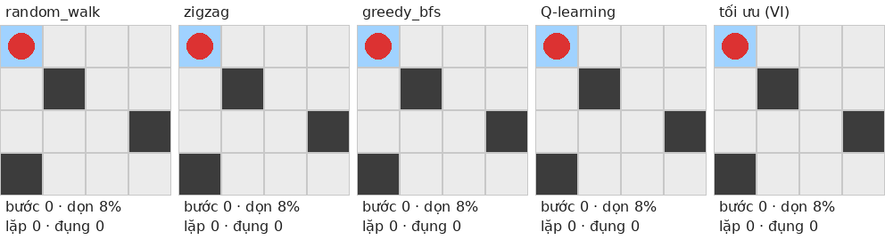
5Các phương pháp
Dự án không dùng hết các thuật toán trong sách. Nó gồm hai mô hình học và hai loại thước đo không học:
| Vai trò | Phương pháp | Giáo trình / nguồn | File |
|---|---|---|---|
| Mô hình chính | Q-learning dạng bảng | S&B mục 6.5 | tabular/q_learning.py |
| Mở rộng của mô hình chính | DQN = Q-learning + mạng CNN + replay buffer + target network | S&B 9, 11.3, 16.5; Mnih et al. 2015 | deep/dqn.py |
| Đáp án tối ưu (không học) | Value Iteration trên đồ thị trạng thái | S&B mục 4.4 | tabular/value_iteration.py |
| So sánh (không học) | Đi ngẫu nhiên, zigzag, greedy BFS | — | baselines/ |
5.1 Ba baseline không dùng RL
- random_walk: chọn ngẫu nhiên một hướng không đâm tường. Mốc "không có chiến lược".
- zigzag: quét kiểu luống cày (hàng chẵn trái sang phải, hàng lẻ ngược lại). Gặp vật cản thì đi vòng bằng đường ngắn nhất tới ô chưa dọn đầu tiên theo thứ tự quét. Đây là cách máy cắt cỏ và robot rẻ tiền hay dùng.
- greedy_bfs: luôn đi tới ô chưa dọn gần nhất (tìm bằng BFS). Mạnh, nhưng hay bỏ sót góc rồi phải quay lại.
5.2 Value Iteration: đáp án tối ưu để chấm điểm
Với phòng nhỏ, có thể liệt kê mọi trạng thái đạt tới được bằng BFS (3×3: 1.081 trạng thái; 4×4 có vật cản: 4.688; 4×4 trống: 109.248), rồi áp dụng công thức Bellman cho tới khi hội tụ:
V(s) ← max_a [ r(s,a) + γ · V(s') ] (s' terminal thì V(s') = 0)
lặp cho tới khi thay đổi lớn nhất Δ < 10⁻¹⁰Ngoài ra, BFS trên đồ thị trạng thái cho số bước ít nhất chính xác để dọn hết từ mỗi điểm xuất phát. Đây là thước đo "khoảng cách tới tối ưu" của mọi phương pháp khác. Lập luận tô màu bàn cờ cho thấy phòng 3×3 cần 8 bước nếu xuất phát ở góc hoặc tâm, và 9 bước nếu xuất phát ở giữa cạnh. Test tự động xác nhận đúng như vậy.
5.3 Q-learning: mô hình chính
Q(s, a) là "tổng phần thưởng kỳ vọng nếu ở trạng thái s làm hành động a, rồi sau đó đi tốt nhất". Robot giữ một bảng Q và cập nhật sau mỗi bước. Code bám đúng từng dòng pseudocode mục 6.5:
# "Initialize S"
state = encode(env.reset())
loop:
# "Choose A from S using policy derived from Q (ε-greedy)"
action = epsilon_greedy(state, ε)
# "Take action A, observe R, S'"
next_state, reward, terminated, truncated = env.step(action)
# "Q(S,A) ← Q(S,A) + α[R + γ max_a Q(S',a) − Q(S,A)]"
target = reward if terminated else reward + γ * max(Q[next_state])
Q[state][action] += α * (target − Q[state][action])
# "S ← S'" … "until S is terminal"
state = next_state- ε-greedy: với xác suất ε chọn ngẫu nhiên để khám phá, còn lại chọn hành động có Q lớn nhất. ε giảm tuyến tính từ 1,0 xuống 0,05 trong 80% số episode đầu.
- terminated và truncated: dọn xong thì không cộng giá trị tương lai. Hết bước chỉ là bị cắt ngang, trạng thái sau vẫn còn giá trị nên vẫn cộng γ·max Q.
- Siêu tham số: α = 0,5 (môi trường tất định nên α lớn vẫn ổn), γ = 0,99.
5.4 DQN: Q-learning khi bảng không còn chứa nổi
| Q-learning dạng bảng | DQN | Vì sao đổi |
|---|---|---|
| Q[S][A] tra trong bảng | QNetwork(obs)[A] do CNN tính | Quá nhiều trạng thái; mạng khái quát được sang trạng thái chưa gặp (S&B 9.1) |
| target = R + γ max Q(S', a) | Cùng công thức, max lấy trên bản sao đóng băng của mạng (target network) | Mục tiêu thay đổi mỗi bước làm học bất ổn (deadly triad, S&B 11.3) |
| Cập nhật ngay sau mỗi bước | Lưu vào replay buffer, học trên lô 64 mẫu ngẫu nhiên | Các bước liên tiếp tương quan mạnh; lấy mẫu ngẫu nhiên phá tương quan |
| Q += α(target − Q) | Một bước gradient trên Huber loss | Cùng ý "kéo ước lượng về phía mục tiêu" |
| ε-greedy | ε-greedy (giảm trong 30% số bước đầu) | Giống hệt |
Mạng nơ-ron (deep/networks.py): Conv 3→16 (3×3) → ReLU → Conv 16→32 (3×3) → ReLU → Flatten → Linear → 128 → ReLU → Linear → 4 giá trị Q. Mạng có khoảng 268 nghìn tham số trên lưới 8×8. Mạng không dùng pooling vì lưới quá nhỏ, mất thông tin vị trí từng ô là mất thông tin quan trọng.
Siêu tham số (chọn bằng thử nghiệm, mục 9): learning rate 2,5·10⁻⁴, buffer 100.000, batch 64, cập nhật mạng mỗi 4 bước, chép sang target network mỗi 500 bước, 2.000 bước đầu đi ngẫu nhiên để lấp buffer.
5.5 Ba cải tiến để DQN dọn được phòng lạ (v3, v4)
- Action masking: khi chọn hành động và khi lấy max trong mục tiêu Q, bỏ các hướng đâm vào tường. Thông tin này đọc thẳng từ kênh vật cản của quan sát. Đụng tường không bao giờ có ích, nên che đi không làm mất lời giải tối ưu, mà loại được vòng lặp "đâm tường mãi" của chính sách tất định.
- Quan sát lấy robot làm tâm: dịch ảnh 3 kênh sao cho robot luôn ở giữa. Ảnh có kích thước (2H−1)×(2W−1) để từ tâm vẫn thấy toàn bộ phòng, vùng ngoài bản đồ coi là tường. Nhờ vậy quy tắc "ô bẩn ngay bên trái thì đi trái" chỉ cần học một lần, dùng chung cho mọi vị trí và mọi căn phòng.
- Huấn luyện song song và chọn mô hình: chạy 16 môi trường trong một tiến trình, chọn hành động theo lô trên GPU, cập nhật bằng lô 256 mẫu mỗi 16 bước (cùng tỷ lệ dùng lại dữ liệu như lô 64 mỗi 4 bước). Huấn luyện nhanh gấp gần 4 lần (0,86 so với 3,23 ms/bước). Mô hình cuối là bản có kết quả tốt nhất trên các phòng kiểm định ngẫu nhiên, tách biệt hoàn toàn với tập test, thay vì bản ở bước cuối vốn có thể vừa dao động xuống.
6Công nghệ và cấu trúc code
| Công nghệ | Dùng để làm gì |
|---|---|
| Python 3.11–3.13 | Ngôn ngữ chính |
| Gymnasium | Chuẩn giao diện môi trường RL (reset, step) |
| NumPy | Lưới, bảng Q, Value Iteration dạng vector, đếm trạng thái |
| PyTorch | Mạng CNN và huấn luyện DQN, chạy được trên GPU (CUDA) hoặc CPU |
| pandas, Matplotlib | Ghi log CSV, tổng hợp kết quả, vẽ hình |
| Pillow | Vẽ khung hình và xuất GIF |
| pytest | 192 test tự động |
| Git | Quản lý phiên bản, mỗi phần một commit |
Cấu trúc thư mục
project_vaccum/
├── env/ môi trường: bản đồ, transition thuần, VacuumEnv, phòng ngẫu nhiên, render GIF
├── baselines/ random_walk, zigzag, greedy_bfs (chung giao diện Agent.act)
├── tabular/ đồ thị trạng thái, Value Iteration, Q-learning
├── deep/ CNN, replay buffer, DQN (+ action masking)
├── experiments/ đánh giá chung, các script thí nghiệm, vẽ hình, demo, reproduce_all
├── tests/ pytest: đơn vị + chạy thử toàn bộ luồng của mọi script
├── results/ CSV, hình, GIF, config.json (mô hình .pt/.pkl không đưa lên Git)
├── utils/ đường dẫn, seed, ghi file
├── PLAN_rel.md, IMPLEMENTATION_PLAN.md, CHANGELOG_DESIGN.md, README.mdLuồng dữ liệu của một thí nghiệm
dòng lệnh (--seeds, --workers, --device)
→ tạo môi trường (VacuumEnv / RandomMapVacuumEnv)
→ agent học (Q-learning hoặc DQN), đánh giá định kỳ chính sách tham lam
→ ghi CSV theo từng seed + config.json (siêu tham số, commit git, phiên bản thư viện)
→ bảng tổng hợp trung bình ± std qua seed + hình learning curve
→ make_demo dùng mô hình đã lưu để tạo GIFMọi agent (baseline, Q-learning, DQN, Value Iteration) có chung một giao diện act(obs) → hành động và chạy qua cùng một hàm evaluate(), nên phép so sánh luôn công bằng: cùng bản đồ, cùng giới hạn bước, cùng seed đánh giá.
7Cài đặt và chạy
7.1 Cài đặt (Windows PowerShell)
cd project_vaccum
python -m venv .venv
.\.venv\Scripts\Activate.ps1
python -m pip install --no-cache-dir --upgrade pip
# Máy có GPU NVIDIA:
pip install --no-cache-dir torch --index-url https://download.pytorch.org/whl/cu130
# Máy không có GPU: thay cu130 bằng cpu
pip install --no-cache-dir -r requirements.txtTrên Google Colab chỉ cần pip install -r requirements.txt. Phiên bản đã kiểm chứng nằm trong requirements-lock.txt.
7.2 Kiểm tra cài đặt
python -m pytest -m "not slow" # ~20 giây
python -m pytest # đầy đủ, gồm chạy thử mọi script (~3 phút)7.3 Xem nhanh môi trường
python -c "from env.render import demo_random_gif; demo_random_gif('furniture_8x8', 'results/gifs/random_8x8.gif')"7.4 Chạy từng thí nghiệm
| Thí nghiệm | Lệnh | Thời gian* |
|---|---|---|
| Baseline | python -m experiments.run_baselines | < 1 phút |
| Đáp án tối ưu | python -m experiments.run_value_iteration | < 1 phút |
| Q-learning | python -m experiments.run_tabular --map obstacle_4x4 --start 0 0 --workers 3 | ~4 phút |
| E7 + giới hạn bảng Q | python -m experiments.run_state_explosion --workers 4 | ~16 phút |
| E1 tính Markov | python -m experiments.run_ablation --exp markov --workers 3 | ~5 phút |
| E2 thiết kế reward | python -m experiments.run_ablation --exp reward --workers 3 | ~6 phút |
| DQN 4×4 | python -m experiments.run_deep --map obstacle_4x4 --timesteps 200000 --workers 3 | ~12 phút |
| DQN 8×8 đồ đạc | python -m experiments.run_deep --map furniture_8x8 --timesteps 500000 --workers 2 | ~1 giờ |
| DQN v4 phòng lạ 8×8 | python -m experiments.run_deep --random-maps 8 8 0.15 --timesteps 2000000 --n-envs 16 --batch-size 256 --train-freq 16 --action-mask --egocentric --keep-best --eval-every 50000 --eval-episodes 50 --workers 3 | ~1 giờ |
| E3 mật độ vật cản (v4) | python -m experiments.run_generalization --exp density --size 8 8 --timesteps 2000000 --n-envs 16 --batch-size 256 --train-freq 16 --action-mask --egocentric --keep-best --workers 4 | ~1,7 giờ |
| E4 khái quát hóa (v4) | python -m experiments.run_generalization --exp generalization --timesteps 2000000 --n-envs 16 --batch-size 256 --train-freq 16 --action-mask --egocentric --keep-best --workers 4 | ~1,5 giờ |
| E6 khoảng cách tối ưu | python -m experiments.run_optimality --workers 3 | ~25 phút |
| Demo GIF | python -m experiments.make_demo | ~1 phút |
* Đo trên laptop 12 nhân, 16 GB RAM, RTX 4050. Mọi script có --help, --seeds, --quick (chạy rút gọn vài chục giây để kiểm tra), --out; script DQN có thêm --device auto|cpu|cuda.
7.5 Chạy lại toàn bộ bằng một lệnh
python -m experiments.reproduce_all --quick # kiểm tra luồng, vài phút
python -m experiments.reproduce_all --full --workers 3 # chạy thật, nhiều giờ--workers và đừng mở nhiều lệnh song song. Script experiments/memory_guard.ps1 ghi log bộ nhớ và tự dừng thí nghiệm nếu bộ nhớ sắp cạn.--n-envs 16 --batch-size 256 --train-freq 16, robot chọn hành động theo lô và mạng cập nhật thưa hơn, nên huấn luyện nhanh gấp gần 4 lần (0,86 so với 3,23 ms/bước trên RTX 4050).8Kết quả thí nghiệm
Quy tắc báo cáo: trung bình ± độ lệch chuẩn qua 5 seed (E3, E4: 3 seed vì giới hạn thời gian), không chọn lần chạy tốt nhất, so sánh trên cùng bản đồ, cùng giới hạn bước, cùng seed đánh giá. Kết quả RL thua baseline cũng được báo cáo.
8.1 Baseline
| Phòng | Phương pháp | Dọn xong | Tỷ lệ đã dọn | Số bước TB | Bước đi lại |
|---|---|---|---|---|---|
| 3×3 | random_walk | 72% | 96% | 26,2 | 65% |
| 3×3 | zigzag | 100% | 100% | 9,0 | 10% |
| 3×3 | greedy_bfs | 100% | 100% | 8,6 | 6% |
| 4×4 vật cản | random_walk | 34% | 88% | 47,3 | 77% |
| 4×4 vật cản | zigzag | 100% | 100% | 16,3 | 24% |
| 4×4 vật cản | greedy_bfs | 100% | 100% | 16,1 | 25% |
| 8×8 đồ đạc | random_walk | 0% | 73% | 208 (hết bước) | 82% |
| 8×8 đồ đạc | zigzag | 100% | 100% | 80,0 | 36% |
| 8×8 đồ đạc | greedy_bfs | 100% | 100% | 58,9 | 13% |
Mỗi dòng: 5 seed × 20 episode, xuất phát ngẫu nhiên. Zigzag yếu đi rõ khi phòng có nhiều đồ đạc.
8.2 Q-learning đạt đúng tối ưu (E6)
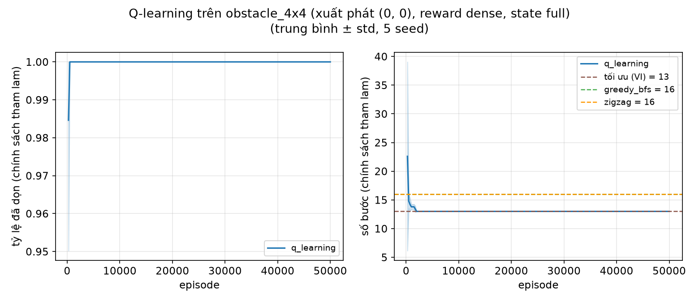
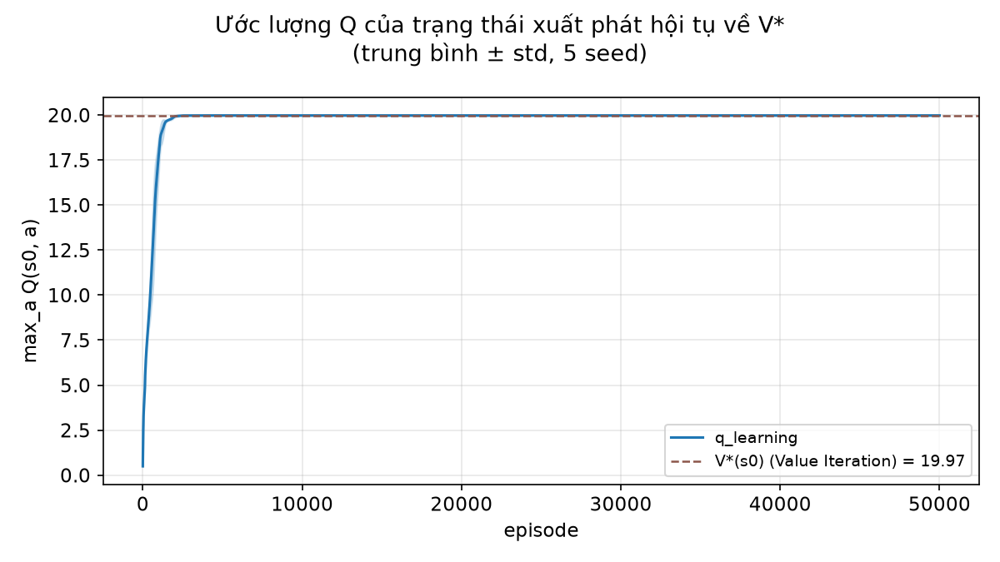
| Phòng | Xuất phát | Tối thiểu | Q-learning | DQN | greedy_bfs | zigzag |
|---|---|---|---|---|---|---|
| 3×3 | (0,0) góc | 8 | 8 (+0%) | 8 (+0%) | 8 (+0%) | 8 (+0%) |
| 3×3 | (0,1) giữa cạnh | 9 | 9 (+0%) | 9 (+0%) | 9 (+0%) | 9 (+0%) |
| 3×3 | (1,1) tâm | 8 | 8 (+0%) | 8 (+0%) | 8 (+0%) | 10 (+25%) |
| 4×4 vật cản | (0,0) | 13 | 13 (+0%) | 13 (+0%) | 16 (+23%) | 16 (+23%) |
| 4×4 vật cản | (0,3) | 13 | 13 (+0%) | 13 (+0%) | 13 (+0%) | 19 (+46%) |
| 4×4 vật cản | (1,2) | 13 | 13 (+0%) | 13 (+0%) | 17 (+31%) | 19 (+46%) |
| 4×4 vật cản | (2,0) | 12 | 12 (+0%) | 12 (+0%) | 17 (+42%) | 12 (+0%) |
| 4×4 vật cản | (3,3) | 12 | 12 (+0%) | 12 (+0%) | 15 (+25%) | 18 (+50%) |
Q-learning huấn luyện riêng cho từng điểm xuất phát (5 seed); DQN dùng một mô hình mỗi phòng, huấn luyện với xuất phát ngẫu nhiên (5 seed). Cả hai đạt đúng số bước tối thiểu ở mọi ô, độ lệch chuẩn bằng 0. Khi xuất phát ngẫu nhiên trên 4×4, Q-learning đạt trung bình 12,72 bước so với tối ưu trung bình 12,69.
8.3 E7: bùng nổ không gian trạng thái, giới hạn của bảng Q
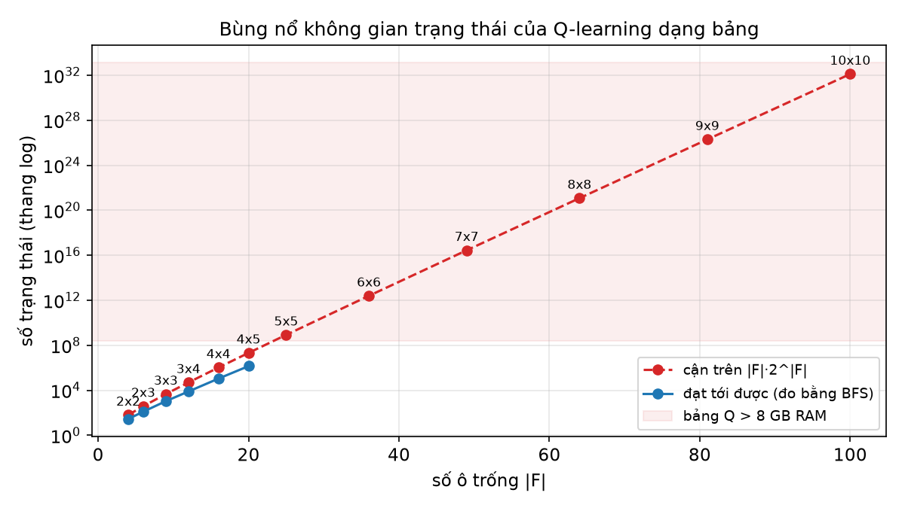
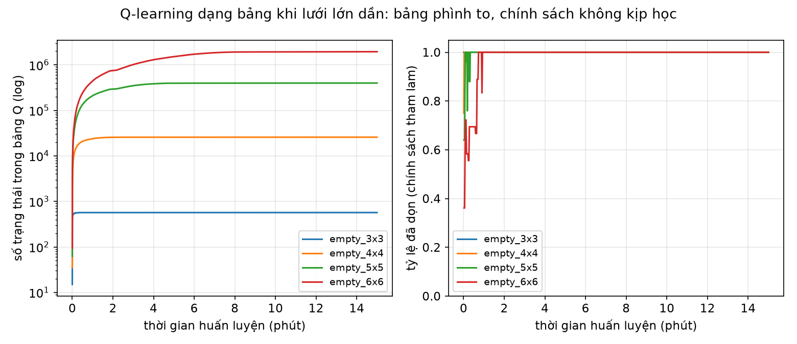
8.4 E1: trạng thái thiếu thông tin "đã dọn" thì không học được
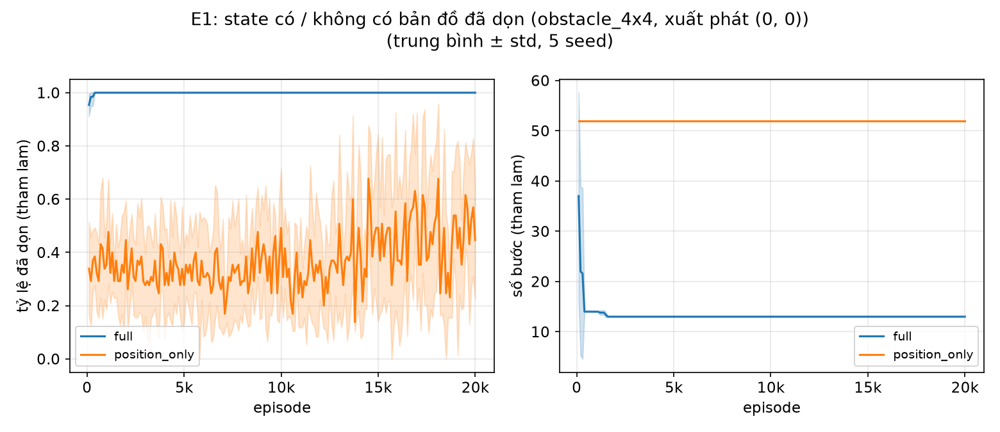
| Trạng thái | Dọn xong | Tỷ lệ đã dọn | Số bước |
|---|---|---|---|
| Đầy đủ (vị trí + ô đã dọn) | 100% | 100% | 13 (tối ưu) |
| Chỉ vị trí | 0% | 45% ± 22% | 52 (hết bước) |
Khi chỉ biết vị trí, chính sách tất định chỉ có một hướng cho mỗi ô, nên robot đi theo một vòng lặp cố định mãi mãi. Đây là bằng chứng thực nghiệm cho tính Markov (S&B mục 3.1).
8.5 E2: thiết kế phần thưởng và reward hacking
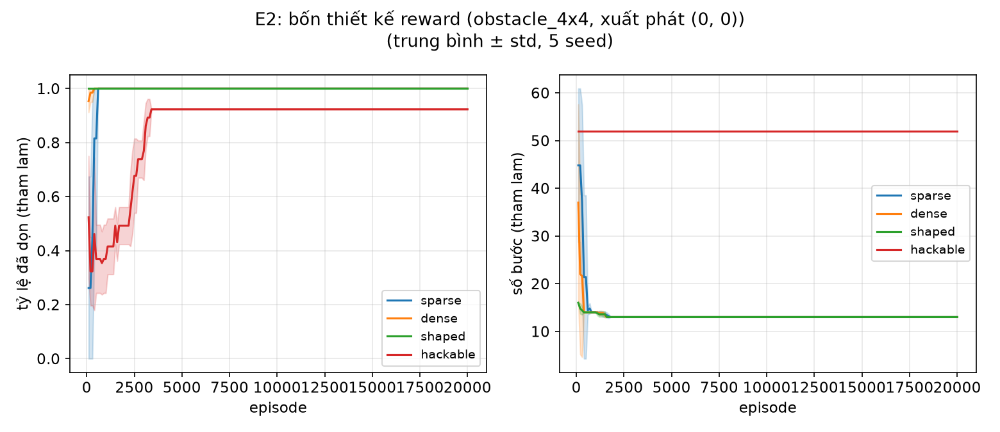
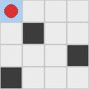
| Reward | Mô tả | Dọn xong | Số bước |
|---|---|---|---|
| sparse | chỉ thưởng +10 khi dọn xong | 100% | 13 |
| dense | như bảng mục 3 | 100% | 13 |
| shaped | dense + shaping thế năng theo khoảng cách tới ô bẩn gần nhất | 100% | 13 |
| hackable | thưởng +0,5 khi lại gần ô bẩn, không phạt khi đi xa, không phạt đi lại | 0% | 52 (hết bước) |
- Reward hacking tái hiện ở cả 5 seed. Với reward "hackable", vòng "đi xa một bước rồi quay lại" luôn có lãi +0,5, nên robot học cách lặp vòng (37 lần qua lại trong một episode) thay vì dọn xong.
- Kiểm chứng lý thuyết shaping (Ng, Harada & Russell 1999): so chính sách tối ưu của Value Iteration giữa reward dense và shaped trên toàn bộ 4.676 trạng thái, 0 trạng thái khác nhau. Shaping dạng thế năng không làm đổi chính sách tối ưu, đúng như định lý.
- Reward sparse vẫn học được trên 4×4 vì đi ngẫu nhiên cũng thỉnh thoảng dọn xong (34% số episode), nên robot vẫn thấy được phần thưởng.
8.6 DQN trên phòng cố định
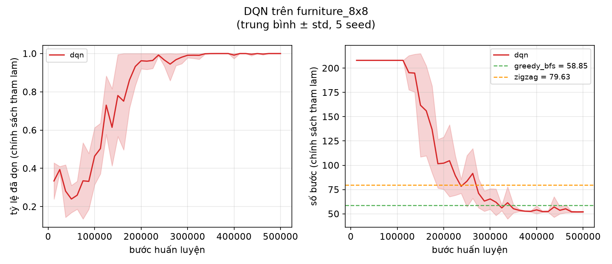
| Phòng | Dọn xong | Số bước DQN | Tham chiếu |
|---|---|---|---|
| 3×3, xuất phát (0,0), 30k bước | 100% | 8,0 ± 0 | tối ưu 8 |
| 4×4 vật cản, xuất phát ngẫu nhiên, 200k bước | 100% | 12,72 ± 0,09 | tối ưu TB 12,69 |
| 8×8 đồ đạc, xuất phát ngẫu nhiên, 500k bước | 100% | 51,9 ± 0,7 | greedy 58,9; zigzag 80,0; cận dưới 51 |
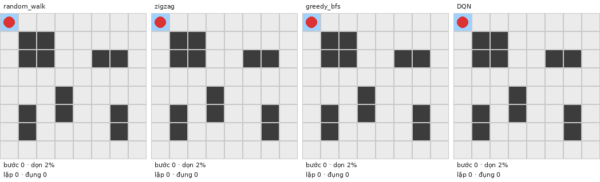
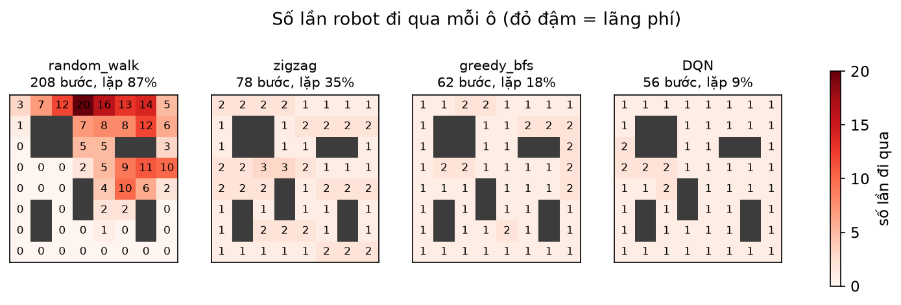
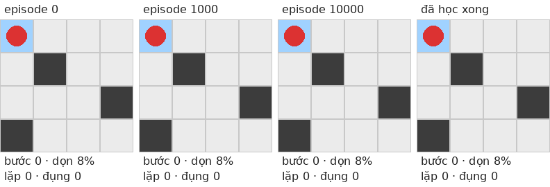
8.7 E4: khái quát sang phòng chưa từng thấy
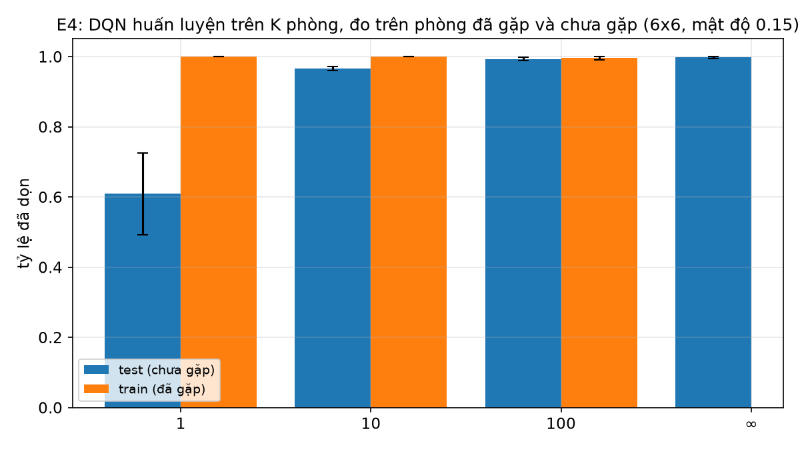
| Huấn luyện trên | Phòng lạ: đã dọn | Phòng lạ: dọn xong | Số bước khi xong | Bản v2 cũ: đã dọn |
|---|---|---|---|---|
| 1 phòng | 61% | 9% | 36,4 | 20% |
| 10 phòng | 97% | 83% | 34,5 | 35% |
| 100 phòng | 99% | 95% | 34,0 | 35% |
| Vô hạn (phòng mới mỗi episode) | 100% | 99% | 33,8 | 35% |
| Tham chiếu trên cùng 50 phòng lạ: greedy BFS 38,8 bước, zigzag 44,2 bước (luôn dọn xong). | ||||
Hai kết luận. Thứ nhất, càng huấn luyện trên nhiều phòng thì càng khái quát tốt: chỉ 1 phòng thì mạng học thuộc phòng đó (100% trên phòng đã gặp, 61% trên phòng lạ); từ 100 phòng trở lên, kết quả trên phòng lạ gần bằng trên phòng đã gặp. Thứ hai, với phòng 6×6, DQN v4 dọn phòng lạ ít bước hơn greedy BFS 13% (33,8 so với 38,8).
8.8 E3: phòng lạ 8×8 theo mật độ vật cản
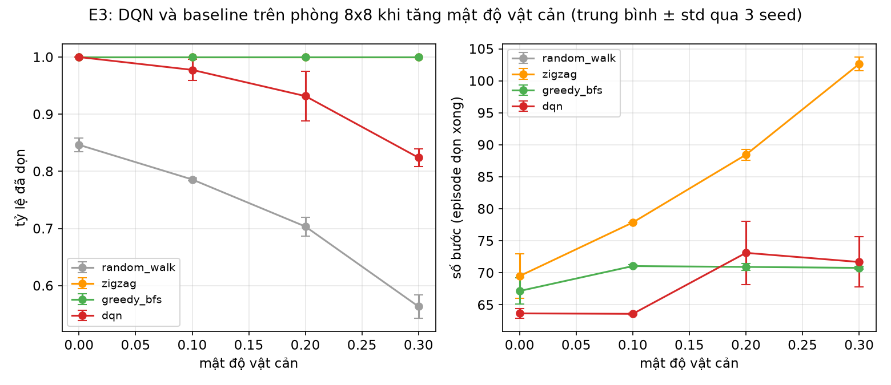
| Mật độ vật cản | DQN v4: đã dọn | DQN v4: dọn xong | DQN: bước khi xong | greedy BFS | zigzag | Bản v2 cũ: đã dọn |
|---|---|---|---|---|---|---|
| 0% (phòng trống) | 100% | 100% | 63,7 | 67,2 | 69,5 | 100% |
| 10% | 98% | 87% | 63,6 | 71,1 | 77,9 | 17% |
| 20% | 93% | 61% | 73,1 | 70,9 | 88,5 | 9% |
| 30% | 82% | 34% | 71,7 | 70,8 | 102,6 | 7% |
- Phòng trống và mật độ 10%: DQN v4 nhanh hơn cả greedy BFS khi dọn xong (63,6–63,7 bước so với 67,2–71,1). Phòng trống 8×8 cần tối thiểu 63 bước, nên DQN gần như tối ưu.
- Zigzag tốn thêm nhiều bước khi mật độ tăng (69,5 → 102,6); greedy giữ ổn định quanh 71.
- Mật độ 20–30%: DQN vẫn dọn được 82–93% diện tích, nhưng chỉ dọn xong 34–61% số phòng. Greedy BFS luôn dọn xong. Phòng càng nhiều vật cản thì hình dạng càng đa dạng và các ô bẩn còn lại càng bị chia cắt, nên cần nhiều dữ liệu huấn luyện hơn.
8.9 Bản chính: phòng lạ 8×8 (mật độ 15%)
Đây là thước đo khó nhất: một mô hình được huấn luyện trên phòng ngẫu nhiên 8×8 (mỗi episode một phòng mới, 15% vật cản), rồi đo trên 50 phòng test mà nó chưa từng thấy, mỗi phòng 1 lần với điểm xuất phát ngẫu nhiên, qua 5 seed huấn luyện.
| Phiên bản | Đã dọn | Dọn xong | Số bước khi xong | Va chạm |
|---|---|---|---|---|
| v2 (DQN ban đầu, 500k bước) | 14% ± 1% | 0% | — | 101 / episode |
| v3 (+ action masking, 500k bước) | 37% ± 5% | 0% | — | 0 |
| v4 (+ robot làm tâm, song song, chọn mô hình; 2 triệu bước) | 98% ± 1% | 80% ± 9% | 69,0 ± 1,5 | 0 |
| greedy BFS (không học) | 100% | 100% | 71,4 | 0 |
| zigzag (không học) | 100% | 100% | 80,8 | 0 |
Kết quả từng seed của v4 (đã dọn / dọn xong / bước khi xong): 99,5% / 88% / 67,3 · 97,9% / 92% / 68,8 · 97,7% / 74% / 70,4 · 96,4% / 76% / 68,1 · 96,5% / 70% / 70,7. Cả 5 seed đều dọn trên 96% diện tích phòng lạ. Khi dọn xong, DQN v4 dùng ít bước hơn greedy BFS ở cả 5 seed. 20% số lần còn lại là robot lặp vòng ở vùng đã dọn cho tới khi hết bước.
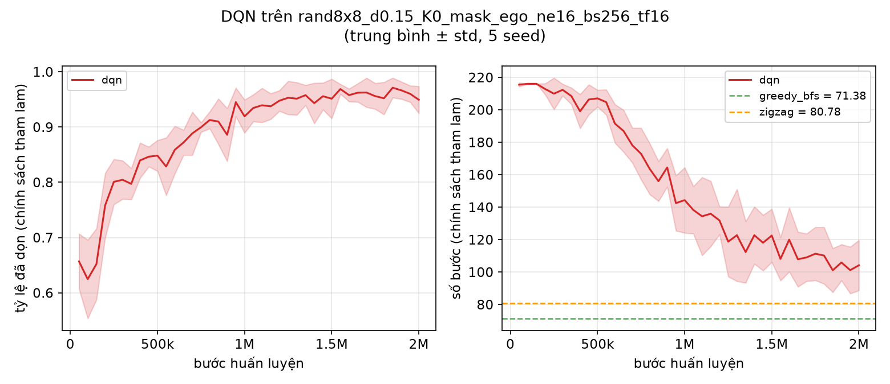
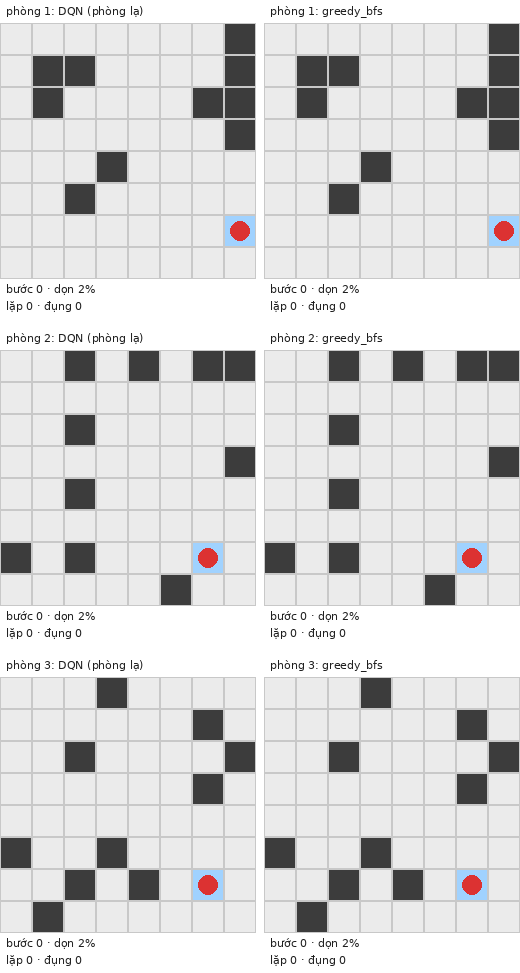
9Quá trình thực hiện và cải tiến
| Phiên bản | Thay đổi | Lý do | Kết quả |
|---|---|---|---|
| v1 | Reward dense; Q-learning chính, DQN mở rộng; bỏ Double Q, PPO, curriculum | Tập trung một câu chuyện dễ giải thích | Q-learning đạt tối ưu trên 3×3, 4×4 |
| v2 | DQN: learning rate 5·10⁻⁴ → 2,5·10⁻⁴, target 1000 → 500, buffer 50k → 100k; mạng nhỏ hơn | Cấu hình cũ sụp giữa chừng (tỷ lệ dọn rơi về 72% ở 30–40k bước); huấn luyện CPU chậm | DQN 4×4 gần tối ưu (12,67 so với 12,69), ổn định; nhanh gấp 3,2 lần |
| v3 | Action masking cho DQN | Ở phòng lạ, robot dành ~47% số bước để đâm tường | Phòng lạ 8×8: 14% → 37% đã dọn, 0 va chạm; vẫn chưa dọn xong phòng nào |
| v4 | Quan sát lấy robot làm tâm; 16 môi trường song song, lô 256; chọn mô hình theo tập kiểm định | Mạng phải học lại cùng một quy tắc ở mọi vị trí; huấn luyện chậm; kết quả dao động giữa các lần đánh giá | Phòng lạ 8×8: 37% → 98% đã dọn, 0% → 80% dọn xong; phòng lạ 6×6: 99% dọn xong |
9.1 Chọn siêu tham số DQN (v2)
Bốn cấu hình được thử trên phòng 4×4 xuất phát ngẫu nhiên, 150k bước. Cấu hình ban đầu cũng đạt tối ưu nhưng bị sụp ở 30–40k bước, một hiện tượng điển hình của DQN khi mục tiêu thay đổi quá nhanh. Cấu hình được chọn (learning rate thấp hơn, target cập nhật thường xuyên hơn, buffer lớn hơn) ổn định từ 20k bước. Log nằm trong results/tuning/.
9.2 Action masking (v3)
Chẩn đoán: trên phòng ngẫu nhiên 8×8, DQN dọn 14% và trung bình 101 trên 216 bước là va chạm. Chính sách tham lam tất định gặp phòng lạ, ước lượng sai và chọn đâm tường. Vì trạng thái không đổi nên hành động cũng không đổi, và robot đâm tường mãi. Đường cong học đi ngang suốt 500k bước, nên thiếu bước huấn luyện không phải nguyên nhân.
Cải tiến: khi chọn hành động và khi lấy max trong mục tiêu Q, bỏ các hướng đâm vào tường (tính trực tiếp từ kênh vật cản của observation). Đụng tường không bao giờ có ích, nên che đi không làm mất chính sách tối ưu.
| Phòng ngẫu nhiên 6×6, 150k bước, 2 seed | Tỷ lệ đã dọn | Dọn xong | Va chạm / episode |
|---|---|---|---|
| Không mask | 31% | 0% | 36 |
| Có action mask | 69% | 7% | 0 |
9.3 Quan sát lấy robot làm tâm và huấn luyện song song (v4)
Action masking xóa được vòng lặp đâm tường, nhưng robot vẫn lặp qua lại giữa các ô đã dọn (91% số bước). Nguyên nhân: với quan sát gốc, mạng phải học riêng cho từng vị trí trên bản đồ, nên gặp phòng lạ là không biết đi đâu. Bốn cấu hình được thử trên phòng ngẫu nhiên 8×8 (600k bước, 2 seed, 16 môi trường song song):
| Cấu hình (đều có action mask) | Đã dọn | Dọn xong |
|---|---|---|
| Quan sát gốc | 60% | 1% |
| Quan sát lấy robot làm tâm | 91% | 42% |
| Quan sát gốc + reward shaping (hệ số 2) | 59% | 0% |
| Lấy robot làm tâm + reward shaping | 89% | 33% |
Quan sát lấy robot làm tâm là cải tiến quyết định. Reward shaping không giúp thêm, nên được bỏ để giữ thiết kế đơn giản. Đường cong học còn đi lên ở 600k bước và dao động giữa các lần đánh giá, nên bản chính được huấn luyện 2 triệu bước và chọn mô hình theo tập kiểm định. Log nằm trong results/v4_ab/.
9.4 Các lỗi đã gặp và cách sửa
- Venv dùng chung thư viện với Anaconda kéo theo plugin pytest bị lỗi: chuyển sang venv cô lập.
- Console Windows không in được tiếng Việt: chuyển đầu ra sang UTF-8.
- Lượt Q-learning xuất phát ngẫu nhiên ghi đè thư mục của lượt xuất phát cố định: thêm hậu tố điểm xuất phát (
_s00) vào tên thư mục và chạy lại. - Cài torch bản CPU dù máy có GPU: chuyển sang bản CUDA, thêm
--device auto. - Chạy quá nhiều tiến trình làm tràn RAM; worker Q-learning vẫn import torch (1,3 GB mỗi tiến trình): sửa code, giới hạn số worker, thêm script canh bộ nhớ.
Toàn bộ thay đổi thiết kế ghi trong CHANGELOG_DESIGN.md, kèm các dòng đề xuất cho bảng B8 của kế hoạch.
10Giới hạn và hướng phát triển
Giới hạn
- Mô phỏng đơn giản hóa: robot đi từng ô, chuyển động tất định, không trượt bánh, không cảm biến nhiễu, không SLAM, vật cản tĩnh, một robot.
- Q-learning dạng bảng chỉ dùng được cho một căn phòng và một điểm xuất phát; bộ nhớ tăng theo hàm mũ.
- Trên phòng lạ nhiều vật cản (20–30%), DQN v4 chỉ dọn xong 34–61% số phòng; thỉnh thoảng chính sách tất định vẫn lặp vòng ở vùng đã dọn. Greedy BFS luôn dọn xong.
- Mỗi mô hình DQN chỉ dùng cho một kích thước lưới (đầu vào mạng cố định).
- E3, E4 dùng 3 seed thay vì 5 vì giới hạn thời gian.
Hướng phát triển
- Huấn luyện lâu hơn và trên nhiều mật độ vật cản cùng lúc; đường cong học ở 2 triệu bước vẫn còn đi lên.
- Kết hợp: dùng DQN làm chính sách chính, chuyển sang greedy BFS khi phát hiện robot lặp lại một trạng thái, để đảm bảo luôn dọn xong.
- Mạng tích chập toàn phần (fully convolutional) để một mô hình dùng được cho nhiều kích thước phòng.
- Mở rộng thực tế: pin và trạm sạc, vật cản động (người, thú cưng), quan sát một phần (POMDP), nhiều robot, chuyển sang robot thật (sim-to-real).
11Chuẩn bị vấn đáp
- Vì sao state phải chứa bản đồ đã dọn?
- Để thỏa tính Markov: cùng vị trí nhưng tiến độ khác nhau thì phần thưởng tương lai khác nhau. E1 cho thấy thiếu thông tin này thì robot lặp vòng, chỉ dọn 45%.
- Q-learning khác SARSA ở đâu?
- Q-learning dùng max_a Q(S', a) (off-policy, học giá trị của chính sách tối ưu); SARSA dùng Q(S', A') với A' là hành động thực sự sẽ làm (on-policy). Chỉ khác đúng một dòng.
- Tại sao terminated và truncated xử lý khác nhau?
- Terminated là kết thúc thật (đã dọn hết), giá trị tương lai bằng 0. Truncated chỉ là bị cắt do hết bước, trạng thái sau vẫn còn giá trị nên vẫn phải cộng γ·max Q. Nhầm hai cái là lỗi phổ biến nhất khi tự viết RL.
- Làm sao biết code Q-learning đúng?
- So với đáp án Value Iteration: Q-learning đạt đúng số bước tối thiểu ở mọi điểm xuất phát và max Q(s₀) hội tụ về đúng V*(s₀) = 16,9689 trên 3×3 (tính tay được). Có test tự động cho cả hai.
- Vì sao cần DQN khi Q-learning đã tối ưu?
- Bảng Q tăng theo hàm mũ (8×8 có khoảng 10²¹ trạng thái tiềm năng) và chỉ dùng được cho đúng một phòng. Mạng nơ-ron nén thông tin và về nguyên tắc khái quát được sang trạng thái chưa gặp.
- Target network và replay buffer để làm gì?
- Replay buffer phá tương quan giữa các bước liên tiếp và dùng lại kinh nghiệm. Target network giữ mục tiêu ổn định trong một khoảng thời gian, tránh "đuổi theo cái bóng của chính mình", một biểu hiện của deadly triad (xấp xỉ hàm + bootstrap + off-policy).
- Reward hacking là gì, dự án có không?
- Là khi agent tìm cách ăn điểm mà không làm đúng nhiệm vụ. Với reward chỉ thưởng khi lại gần ô bẩn mà không phạt khi đi xa, robot học cách đi qua đi lại mãi; tái hiện ở cả 5 seed (E2).
- Shaping có làm thay đổi lời giải tối ưu không?
- Shaping dạng thế năng F = γΦ(s') − Φ(s) thì không (Ng et al. 1999). Dự án kiểm chứng bằng Value Iteration: 0/4.676 trạng thái có chính sách tối ưu khác nhau.
- Làm sao DQN dọn được phòng chưa từng thấy?
- Nhờ quan sát lấy robot làm tâm: robot luôn ở giữa ảnh nên quy tắc cục bộ ("ô bẩn bên trái thì đi trái") dùng chung cho mọi vị trí và mọi phòng; và nhờ huấn luyện trên phòng mới mỗi episode. A/B cho thấy riêng thay đổi này nâng tỷ lệ dọn phòng lạ từ 60% lên 91%. E4 cho thấy càng huấn luyện trên nhiều phòng càng khái quát tốt.
- Chọn mô hình theo tập kiểm định có phải gian lận không?
- Không. Mô hình được chọn theo kết quả trên các phòng ngẫu nhiên sinh trong lúc huấn luyện, đã loại trừ tập test. Kết quả báo cáo đo trên 50 phòng test mà mô hình chưa từng thấy và không dùng để chọn.
- Vì sao DQN vẫn thua greedy ở phòng nhiều vật cản?
- Phòng 30% vật cản có hình dạng rất đa dạng, ô bẩn còn lại bị chia cắt; chính sách tất định đôi khi lặp vòng ở vùng đã dọn. Cần nhiều dữ liệu hơn, hoặc kết hợp chuyển sang greedy khi phát hiện lặp.
- Vì sao γ = 0,99?
- Robot cần nhìn trước nhiều bước (dọn 52 ô cần ít nhất 51 bước); γ nhỏ sẽ làm phần thưởng hoàn thành ở xa gần như bị bỏ qua. γ < 1 vẫn giữ tổng phần thưởng hữu hạn và ưu tiên dọn sớm.
12Tài liệu tham khảo
- Sutton, R. S., & Barto, A. G. (2018). Reinforcement Learning: An Introduction (2nd ed.). MIT Press. Mục 3, 4.4, 6.5, 9, 11.3, 16.5, 17.3–17.4.
- Mnih, V. et al. (2015). Human-level control through deep reinforcement learning. Nature, 518.
- Ng, A. Y., Harada, D., & Russell, S. (1999). Policy invariance under reward transformations. ICML.
- Galceran, E., & Carreras, M. (2013). A survey on coverage path planning for robotics. Robotics and Autonomous Systems.
- Tài liệu Gymnasium và PyTorch.